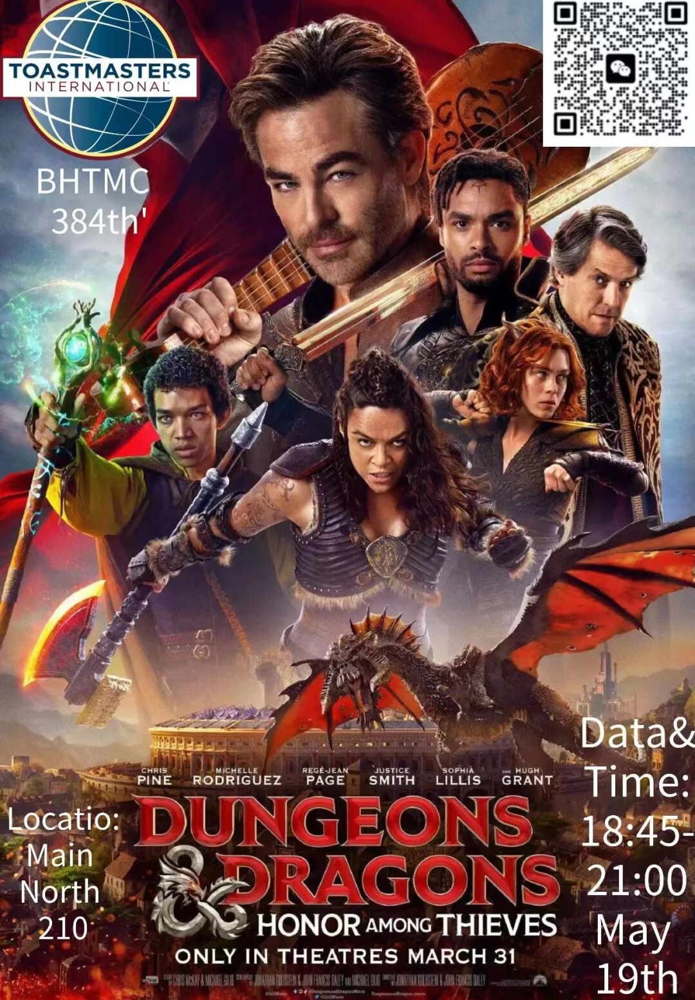

Beihang TMC 384th Meeting
In this virtual world, you are free to be anyone you choose. But the acquisition of outstanding abilities is accompanied by all the disadvantages of the character and the corresponding principles.
In this adventure into the unknown, you can be good, neutral, evil or even switch randomly. You can do everything and face all the surprises or crises that this entails.
Now, are you ready to go on this otherworldly journey?
Theme:
Dungeons & Dragons: Honor Among Thieves
Location:
Main North 210（主北210）北京航空航天大学(学院路校区)主楼
Date & Time:
18:45-21:00, May 19th. (This Friday)
Table Topic Master:
Kylin

Toastmasters International is a nonprofit educational organization that teaches public speaking and leadership skills through a worldwide network of clubs. Headquartered in Englewood, Colorado, the organization's membership is approximately 280,000 in more than 14,700 clubs in 144 countries. Since 1924, Toastmasters International has helped people from diverse backgrounds become more confident speakers, communicators, and leaders.
北航Toastmasters英语演讲俱乐部，致力于提升公众演讲能力与领导力。在这里，你会结识一群志同道合的朋友，如果你对英语、演讲、口语感兴趣，那就快来加入我们，一起进行思想碰撞吧
Mastermind: Kylin
Poster: Jason
Editor: Daisy
Review: Beihang Toastmasters
https://mp.weixin.qq.com/s/4-LQP71I_w8aabxP7xXTbA
本页为抢救式本地归档，图文已永久保存。